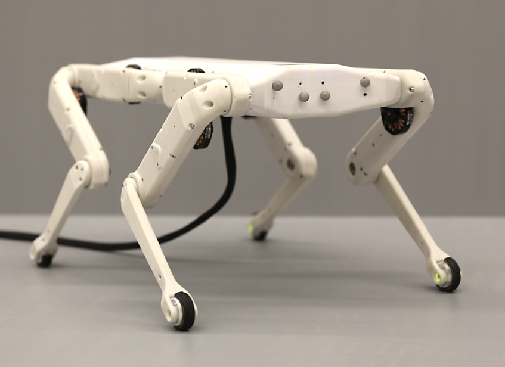
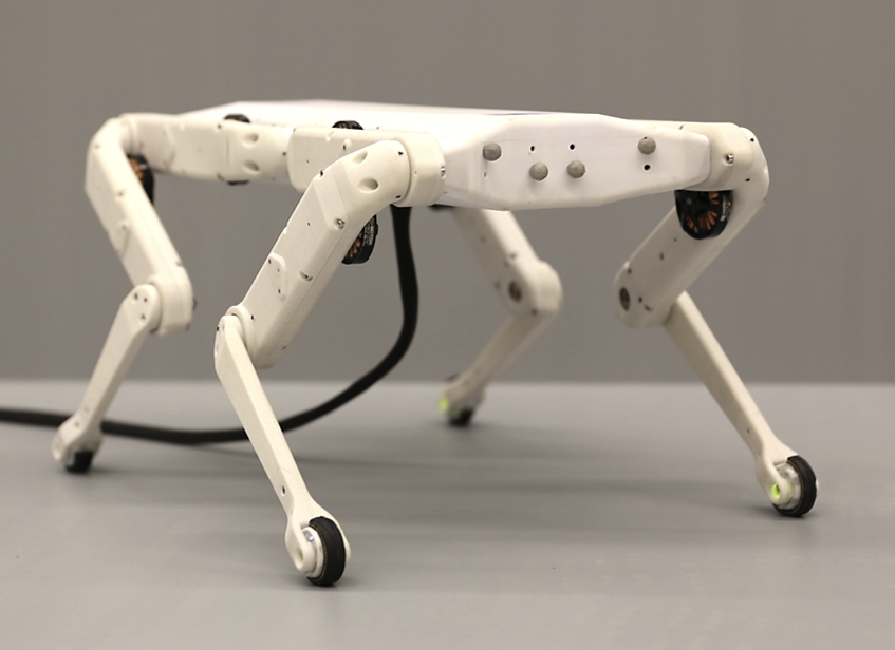

Open Dynamic Robot Initiative
An Open Torque-Controlled Modular Robot Architecture for Legged Locomotion Research
 

Introduction
This website is the entry point to the ressources of the Open Dynamic Robot Initiative. This project originated in an effort to build a low cost and low complexity actuator module using brushless motors that can be used to build different types of torque controlled robots with mostly 3D printed and off-the-shelves components. This module, and extensions, can be used to build legged robots or manipulators. A paper describing the actuator module and the quadruped design can be found here.
Videos
More videos are available on our YouTube channel.
Build you own robot!
All the hardware (drawings) and software has been open sourced under the BSD 3-clause license so the robots can easily be reproduced by other research laboratories. Everyone is welcomes to contribute to the project!All the sources are hosted on the Open Dynamic Robot Initiative Github site
- The sources for the mechanics and electronics are available in the Open Robot Actuator Hardware Repository and contains the actuator module, the one legged-robot, the quadruped Solo, the foot contact sensor and the electronics described in the paper An Open Torque-Controlled Modular Robot Architecture for Legged Locomotion Research
-
A general software overview and documentation for the projects is available in the
Open Dynamic Robot Initiative Software Documentation
The main software is available in several libraries:
- The Brushless Motor Control Real-Time CAN API that contain the API for real-time communication with the motor control board
- MotorWare Extensions that contains some modules that extend the Texas Instruments MotorWare library as well as a patch file to apply some required modifications on the original MotorWare library itself.
- MotorWare Configuration Files that contains the global configuration files that are used by all our MotorWare projects.
Partners
This work is done in collaboration between the Motion Generation and Control Group, the Dynamic Locomotion Group and the Robotics Central Scientific Facility at the Max-Planck Institute for Intelligent System , the Machines in Motion Laboratory at New York University's Tandon School of Engineering and the Gepetto Team at the LAAS/CNRS.
Referencing the project
You can reference the project with the following citation:@article{grimminger2019open,
title={An Open Torque-Controlled Modular Robot Architecture for Legged Locomotion Research},
author={Felix Grimminger and Avadesh Meduri and Majid Khadiv and Julian Viereck and Manuel Wüthrich and Maximilien Naveau and Vincent Berenz and Steve Heim and Felix Widmaier and Jonathan Fiene and Alexander Badri-Spröwitz and Ludovic Righetti},
year={2019},
eprint={1910.00093},
archivePrefix={arXiv},
primaryClass={cs.RO}}
The pdf of the paper is available here